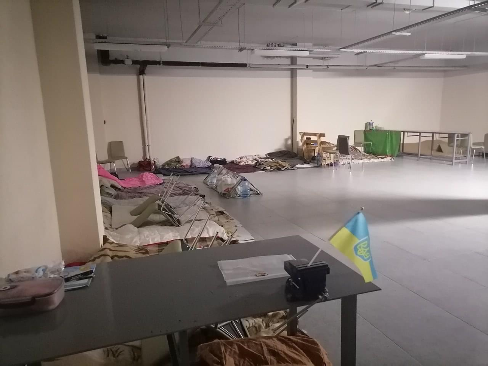

Готель “Паляниця”
Так називали наш ліцей у перші тижні повномасштабного вторгнення. Бо у нашому сховищі ночували мешканці району. Діти, дорослі, літні люди. Разом було не так страшно. Інколи ліцей здригався від далекого вибуху, але ми були певні, що він збереже нас. Так і вийшло.